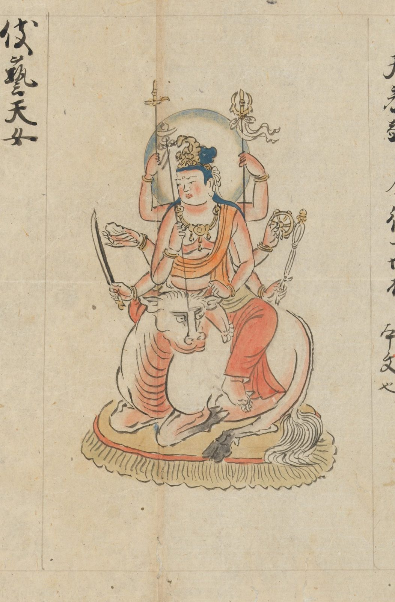
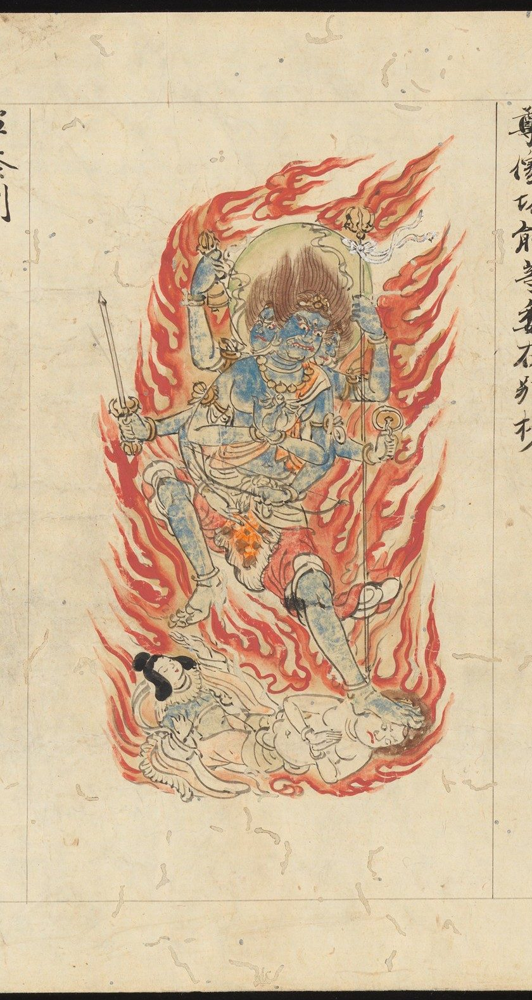
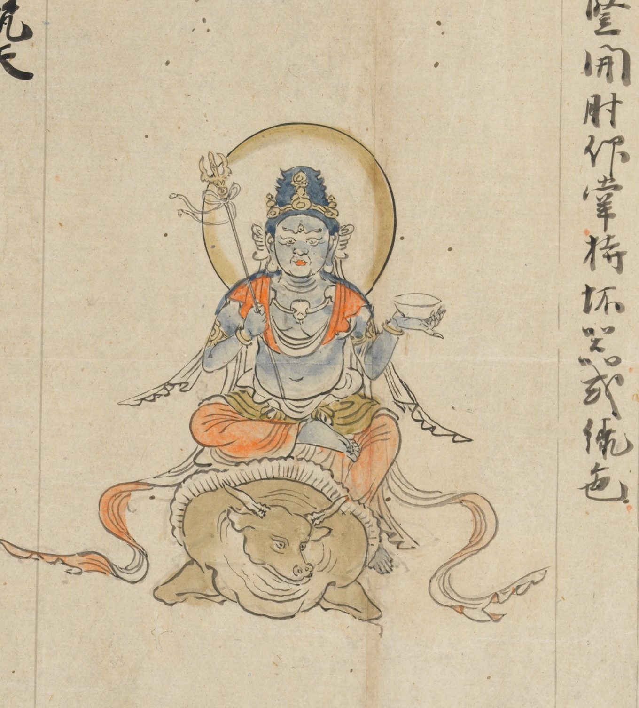
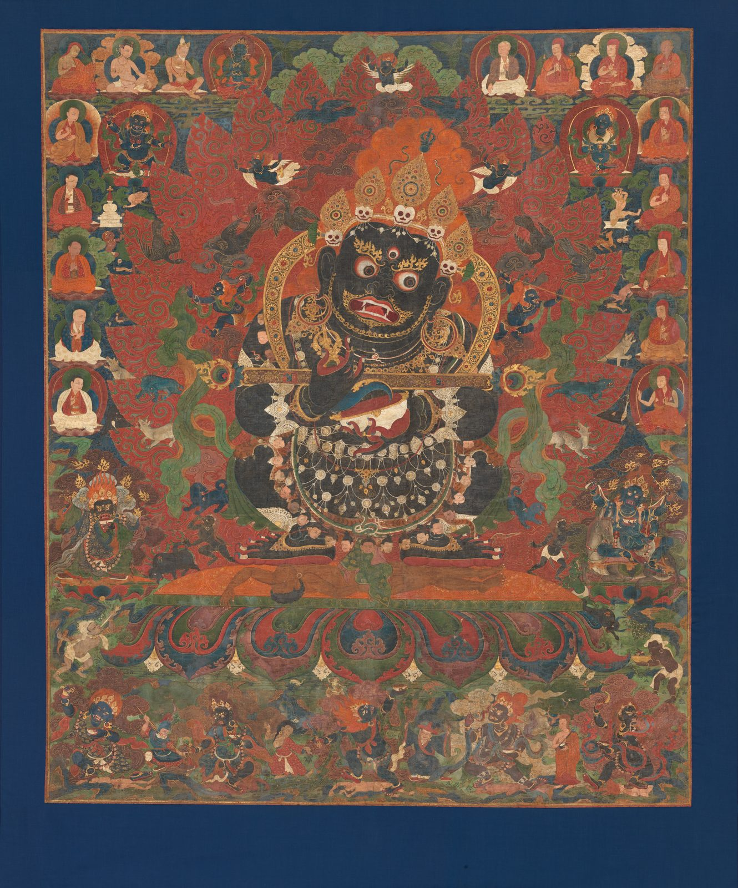

힌두교에서 시바는 창조의 브라흐마, 유지의 비슈누와 함께 세 신을 이루며, 세상을 거두어 다시 새롭게 하는 일을 맡은 신으로 설명됩니다. 불의 고리 안에서 춤추는 나타라자는 한 손에 창조의 소리를 내는 작은 북을, 다른 손에 거두는 불꽃을 들고 있습니다.
그렇다면 불교의 경전은 이 신을 어떻게 보았을까요.

대자재천 — 흰 소를 탄 여러 팔의 모습『도상초(圖像抄)』 권9 · 일본 13세기 · 메트로폴리탄 미술관(퍼블릭 도메인)
불경 속의 이름
마혜수라, 곧 대자재천
한역 불경은 시바의 별칭 마헤슈바라(Maheśvara)를 소리대로 「마혜수라(摩醯首羅)」, 뜻으로 「대자재천(大自在天)」이라 옮겼습니다. 용수의 『대지도론』 권2는 그 모습을 이렇게 적습니다.
「摩醯首羅天 八臂 三眼 騎白牛」 마혜수라천은 팔이 여덟, 눈이 셋이며 흰 소를 탄다.
한국의 불화에도 이 이름이 남아 있습니다. 서울 봉은사 판전 신중도(1857)에는 흰 소를 탄 삼목팔비(三目八臂)의 대자재천이 화면 아래 가운데에 그려져 있다고 국가유산청 해설은 전합니다.

항삼세명왕 — 발밑의 대자재천과 오마『명왕부 제존도(明王部諸尊)』 · 일본 12세기 · 메트로폴리탄 미술관(퍼블릭 도메인)
밀교의 이야기
삼계의 주인, 새 이름을 받다
밀교 경전 『진실섭경』(시호 역, 권9~10)은 스스로 「삼계의 주인」이라 하던 대자재천이 비로자나불 앞에서 금강수보살, 곧 항삼세명왕에게 굴복하는 이야기를 전합니다. 대자재천과 그 배우자 오마(烏摩)는 그 발아래 엎드립니다.
이야기는 거기서 끝나지 않습니다. 이어지는 대목에서 대자재천은 금강의 관정을 받고 「분노금강(忿怒金剛)」이라는 새 이름으로 만다라 안에 자리를 얻습니다.

이사나천 — 동북쪽을 지키는 하늘신『도상초』 권9 · 일본 13세기 · 메트로폴리탄 미술관(퍼블릭 도메인)
열두 하늘신
동북쪽의 이사나천
밀교에서 여덟 방위와 하늘·땅, 해와 달을 지키는 열두 하늘신(십이천) 가운데 동북쪽을 맡은 이사나천도 시바와 이어집니다. 『십이천공의궤』는 이렇게 적습니다.
「東北方伊舍那天 舊云魔醯首羅天 亦云大自在天」 동북방 이사나천, 옛 이름은 마혜수라천이고 대자재천이라고도 한다.

천막의 수호자 마하칼라티베트 중부 1500년경 · 메트로폴리탄 미술관(퍼블릭 도메인)
마하칼라의 여정
위대한 검은 이, 부엌에서 복의 신까지
「위대한 검은 이」 마하칼라(Mahākāla)도 시바와 이어진 이름입니다. 7세기 인도를 다녀온 의정은 『남해기귀내법전』에 큰 절의 부엌 기둥 곁에 검게 칠한 나무 신상을 모시고 「莫訶哥羅 即大黑神(마하칼라, 곧 대흑신)」이라 부른다고 적었습니다. 삼보를 아끼고 대중을 지키는 신으로 공양 때마다 향과 음식을 올렸다고 합니다.
티베트에서 마하칼라는 불법을 지키는 호법신이 되었고, 일본에서 대흑천(다이코쿠텐)은 쌀가마 위에 선 복과 풍요의 신, 칠복신의 하나로 사랑받았습니다.